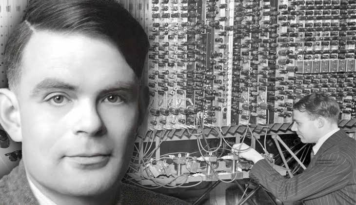

Alan Turing made some big contributions.
Alan Turing was a British mathematician, logician, and computer scientist who is widely considered one of the founding figures of modern computing. In the 1930s, he developed the concept of the Turing machine, a theoretical device that could perform any computation using a set of rules and symbols. This idea laid the groundwork for the field of computer science by defining what it means for a task to be “computable.” During World War II, Turing played a crucial role in breaking the German Enigma code, significantly helping the Allied war effort. He designed the Bombe machine, an early form of a computer that automated the codebreaking process. After the war, Turing continued to explore the possibilities of artificial intelligence and even proposed a test, which is now called The Turing Test, to determine whether a machine could exhibit human-like intelligence. His ideas helped shape the theoretical and practical foundations of digital computers and AI.
